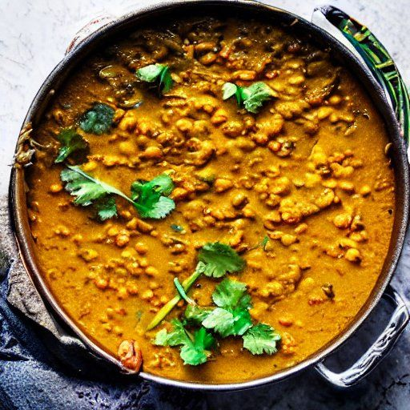

Dal aux lentilles corail
Ingrédients
-
2 oignons

-
2 gousses d'ail
-
2 t de lentilles sèches
-
2 t d'eau
-
500 mL de lait de coco
-
400 g de purée de tomate
-
2 c. à soupe de curry
-
2 c. à thé de curcuma
-
2 c. à thé de gingembre
-
sel
Instructions
Lait de coco avant l'eau. Mettre l'eau dans la conserve pour la rinser.
Une petite conserve de pâte de tomate.
Une conserve de lait de coco, pas d'eau parce que il y en a 2 fois plus que dans la recette.
1 t de lentilles secs.
Cuire les lentilles directement dans le plat, pas besoin de précuire.
Peut-être de l'eau finalement en plus pour que les lentilles absorbent...
Source: https://www.lacuisinedaurelie.com/dahl-de-lentilles-corail/